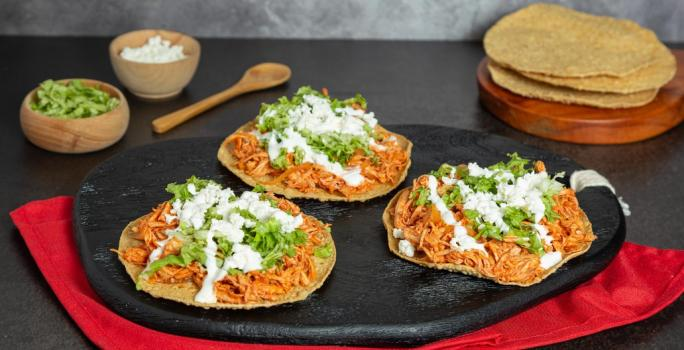

Tinga

- 1 Pechuga de pollo
- 1 Diente de ajo
- 2 Chiles chipocles adobados
- 3 Jitomates
- Cebolla fileteada
- Cocer y deshebrar el pollo
- Licuar ajo, chiles chipocles y jitomates con 1/4 de taza de agua y sal al gusto
- Sofreir cebolla fileteada
- Cocinar el pollo con la cebolla y la salsa
- Servir y disfrutar conm tostadas norteñas y salsa perrona